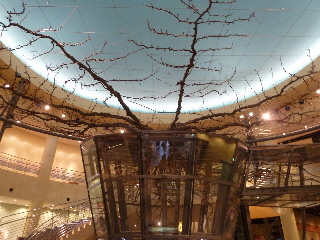

なしっこ館で遊びました。
2015/09/23
なしっこ館は立派な施設です。
中心に巨大な木があって広いです。

梨を試食したりクイズラリーで梨の勉強をしていたら、あっという間に時間が過ぎていました。
博物館で難しい内容が多いですが、クイズラリーだと楽しめますね。館内をぐるっと1周、沢山の資料を読みました。
鳥取県倉吉市駄経寺町198-4
2015/09/23
なしっこ館は立派な施設です。
中心に巨大な木があって広いです。

梨を試食したりクイズラリーで梨の勉強をしていたら、あっという間に時間が過ぎていました。
博物館で難しい内容が多いですが、クイズラリーだと楽しめますね。館内をぐるっと1周、沢山の資料を読みました。